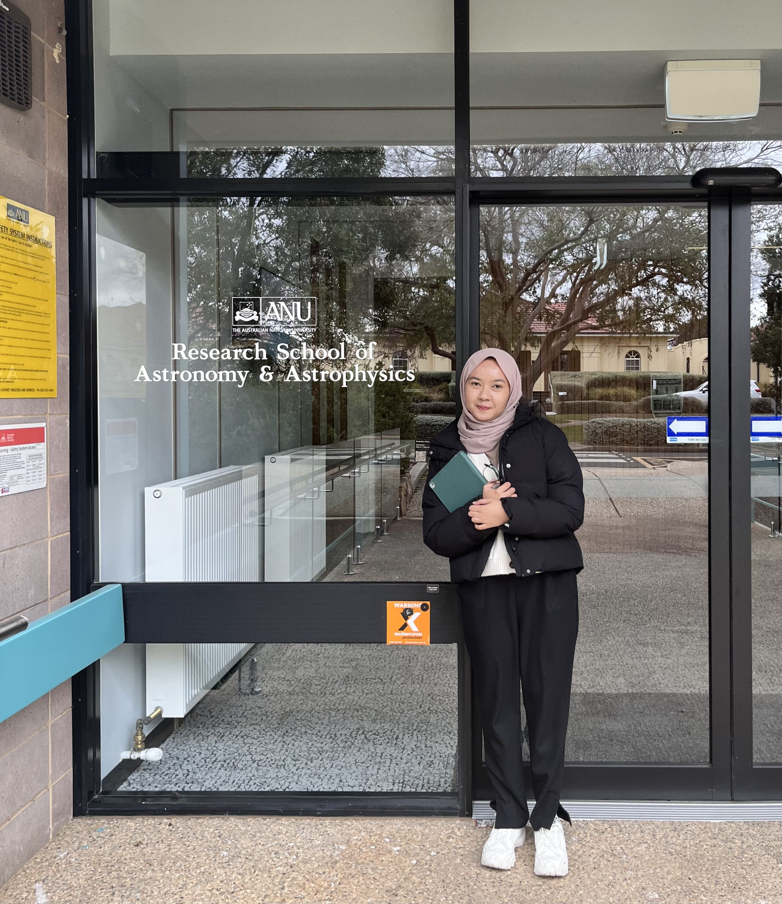

HI! I AM ISHFAHANI .
As an astronomy student, my research mainly centers on unraveling the nature of Dark Energy.
I’ve gained valuable experience in theoretical approaches,
and I’m now increasingly focused on computational methods to further deepen our understanding of this cosmic mystery.
Additonally, I love communicating astronomy to the public. You can find my astronomy-related article on my Blogger account.
Bachelor in Physics, Universitas Gadjah Mada
Graduated in 2022, I specialized in Theoretical Cosmology during my undergraduate studies. My thesis focused on Constraining f(R) Gravity to Explain the Transition of the Universe from Matter-dominated to Dark Energy-dominated Era. Find my publication related to my undergraduate thesis here.
Master in Astronomy and Astrophysics, The Australian National University
(On-going). I’m currently focusing on cosmology with a computational approach, as well as science communication. My ongoing research involves Evaluating Hubble Residuals and Host Galaxy Propertis by using Data from Dark Energy Survey (DES) and Australian Dark Energy Survey (OzDES).
My interest mainly lies on:
Dark Energy
Dark energy is a mysterious force driving the accelerated expansion of the universe, making up about 68% of the cosmos. My research journey began with exploring modified gravity to explain dark energy, and now I’m using Type Ia supernovae data to derive cosmological constraints on accelerating universe.
Type Ia Supernovae
Type Ia supernovae are a specific class of stellar explosions that occur in binary systems when a white dwarf accumulates enough mass from a companion star to reach the Chandrasekhar limit, triggering a thermonuclear explosion. These events are crucial for cosmology as they serve as standard candles for measuring cosmic distances, helping to illuminate the expansion of the universe.
Computational approach to solve astronomy problem
To understand cosmic phenomena, a computational approach is essential for analyzing large datasets derived from astronomical observations. You can find my projects related to how I’ve used computational methods to solve astronomy problems on my GitHub account.